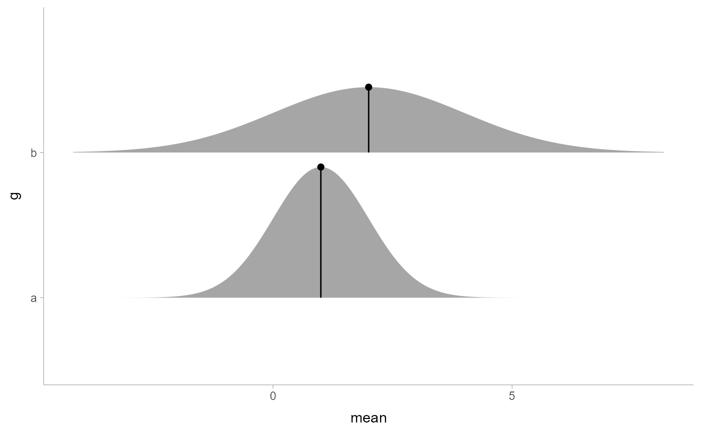
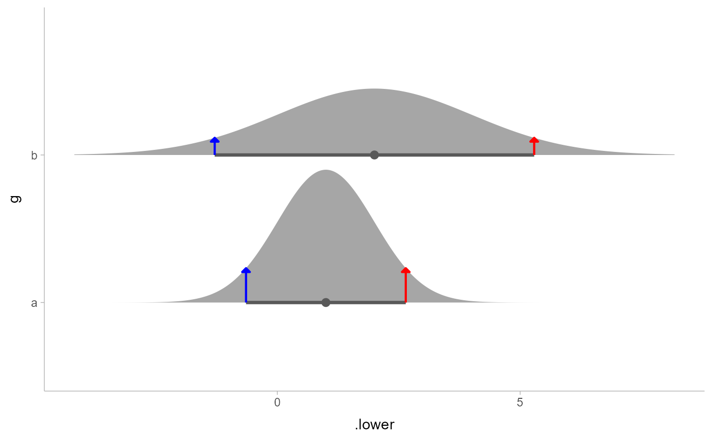

Geometry for drawing "spikes" (optionally with points on them) on top of
geom_slabinterval() geometries: this geometry understands the scaling and
positioning of the thickness aesthetic from geom_slabinterval(), which
allows you to position spikes and points along a slab.
Usage
geom_spike(
mapping = NULL,
data = NULL,
stat = "identity",
position = "identity",
...,
subguide = "spike",
orientation = NA,
subscale = "thickness",
normalize = "all",
arrow = NULL,
na.rm = FALSE,
show.legend = NA,
inherit.aes = TRUE,
check.aes = TRUE,
check.param = TRUE
)Arguments
- mapping
Set of aesthetic mappings created by
aes(). If specified andinherit.aes = TRUE(the default), it is combined with the default mapping at the top level of the plot. You must supplymappingif there is no plot mapping.- data
The data to be displayed in this layer. There are three options:
If
NULL, the default, the data is inherited from the plot data as specified in the call toggplot().A
data.frame, or other object, will override the plot data. All objects will be fortified to produce a data frame. Seefortify()for which variables will be created.A
functionwill be called with a single argument, the plot data. The return value must be adata.frame, and will be used as the layer data. Afunctioncan be created from aformula(e.g.~ head(.x, 10)).- stat
The statistical transformation to use on the data for this layer. When using a
geom_*()function to construct a layer, thestatargument can be used the override the default coupling between geoms and stats. Thestatargument accepts the following:A
Statggproto subclass, for exampleStatCount.A string naming the stat. To give the stat as a string, strip the function name of the
stat_prefix. For example, to usestat_count(), give the stat as"count".For more information and other ways to specify the stat, see the layer stat documentation.
- position
<Position | string> Position adjustment, either as a string, or the result of a call to a position adjustment function. Setting this equal to
"dodge"(position_dodge()) or"dodgejust"(position_dodgejust()) can be useful if you have overlapping geometries.- ...
Other arguments passed to
layer(). These are often aesthetics, used to set an aesthetic to a fixed value, likecolour = "red"orlinewidth = 3(see Aesthetics, below). They may also be parameters to the paired geom/stat.- subguide
<function | string> Sub-guide used to annotate the
thicknessscale. One of:A function that takes a
scaleargument giving a ggplot2::Scale object and anorientationargument giving the orientation of the geometry and then returns a grid::grob that will draw the axis annotation, such assubguide_axis()(to draw a traditional axis) orsubguide_none()(to draw no annotation). Seesubguide_axis()for a list of possibilities and examples.A string giving the name of such a function when prefixed with
"subguide_"; e.g."axis"or"none". The values"slab","dots", and"spike"use the default subguide for their geom families (no subguide), which can be modified by settingsubguide_slab,subguide_dots, orsubguide_spike; see the documentation for those functions.
- orientation
<string> Whether this geom is drawn horizontally or vertically. One of:
NA(default): automatically detect the orientation based on how the aesthetics are assigned. Automatic detection works most of the time."horizontal"(or"y"): draw horizontally, using theyaesthetic to identify different groups. For each group, uses thex,xmin,xmax, andthicknessaesthetics to draw points, intervals, and slabs."vertical"(or"x"): draw vertically, using thexaesthetic to identify different groups. For each group, uses they,ymin,ymax, andthicknessaesthetics to draw points, intervals, and slabs.
For compatibility with the base ggplot naming scheme for
orientation,"x"can be used as an alias for"vertical"and"y"as an alias for"horizontal"(ggdist had anorientationparameter before base ggplot did, hence the discrepancy).- subscale
<function | string> Sub-scale used to scale values of the
thicknessaesthetic within the groups determined bynormalize. One of:A function that takes an
xargument giving a numeric vector of values to be scaled and then returns a thickness vector representing the scaled values, such assubscale_thickness()orsubscale_identity().A string giving the name of such a function when prefixed with
"subscale_"; e.g."thickness"or"identity". The value"thickness"using the default subscale, which can be modified by settingsubscale_thickness; see the documentation for that function.
For a comprehensive discussion and examples of slab scaling and normalization, see the
thicknessscale article.- normalize
<string> Groups within which to scale values of the
thicknessaesthetic. One of:"all": normalize so that the maximum height across all data is1."panels": normalize within panels so that the maximum height in each panel is1."xy": normalize within the x/y axis opposite theorientationof this geom so that the maximum height at each value of the opposite axis is1."groups": normalize within values of the opposite axis and within each group so that the maximum height in each group is1."none": values are taken as is with no normalization (this should probably only be used with functions whose values are in [0,1], such as CDFs).
For a comprehensive discussion and examples of slab scaling and normalization, see the
thicknessscale article.- arrow
<arrow | NULL> Type of arrow heads to use on the spike, or
NULLfor no arrows.- na.rm
<scalar logical> If
FALSE, the default, missing values are removed with a warning. IfTRUE, missing values are silently removed.- show.legend
logical. Should this layer be included in the legends?
NA, the default, includes if any aesthetics are mapped.FALSEnever includes, andTRUEalways includes. It can also be a named logical vector to finely select the aesthetics to display.- inherit.aes
If
FALSE, overrides the default aesthetics, rather than combining with them. This is most useful for helper functions that define both data and aesthetics and shouldn't inherit behaviour from the default plot specification, e.g.borders().- check.aes, check.param
If
TRUE, the default, will check that supplied parameters and aesthetics are understood by thegeomorstat. UseFALSEto suppress the checks.
Value
A ggplot2::Geom representing a spike geometry which can
be added to a ggplot() object.
rd_slabinterval_aesthetics(geom_name),
Details
This geometry consists of a "spike" (vertical/horizontal line segment) and a
"point" (at the end of the line segment). It uses the thickness aesthetic
to determine where the endpoint of the line is, which allows it to be used
with geom_slabinterval() geometries for labeling specific values of the
thickness function.
Aesthetics
The spike geom has a wide variety of aesthetics that control
the appearance of its two sub-geometries: the spike and the point.
Positional aesthetics
x: x position of the geometryy: y position of the geometry
Spike-specific (aka Slab-specific) aesthetics
thickness: The thickness of the slab at eachxvalue (iforientation = "horizontal") oryvalue (iforientation = "vertical") of the slab.side: Which side to place the slab on."topright","top", and"right"are synonyms which cause the slab to be drawn on the top or the right depending on iforientationis"horizontal"or"vertical"."bottomleft","bottom", and"left"are synonyms which cause the slab to be drawn on the bottom or the left depending on iforientationis"horizontal"or"vertical"."topleft"causes the slab to be drawn on the top or the left, and"bottomright"causes the slab to be drawn on the bottom or the right."both"draws the slab mirrored on both sides (as in a violin plot).scale: What proportion of the region allocated to this geom to use to draw the slab. Ifscale = 1, slabs that use the maximum range will just touch each other. Default is0.9to leave some space between adjacent slabs. For a comprehensive discussion and examples of slab scaling and normalization, see thethicknessscale article.
Color aesthetics
colour: (orcolor) The color of the spike and point sub-geometries.fill: The fill color of the point sub-geometry.alpha: The opacity of the spike and point sub-geometries.colour_ramp: (orcolor_ramp) A secondary scale that modifies thecolorscale to "ramp" to another color. Seescale_colour_ramp()for examples.fill_ramp: A secondary scale that modifies thefillscale to "ramp" to another color. Seescale_fill_ramp()for examples.
Line aesthetics
linewidth: Width of the line used to draw the spike sub-geometry.size: Size of the point sub-geometry.stroke: Width of the outline around the point sub-geometry.linetype: Type of line (e.g.,"solid","dashed", etc) used to draw the spike.
Other aesthetics (these work as in standard geoms)
widthheightgroup
See examples of some of these aesthetics in action in vignette("slabinterval").
Learn more about the sub-geom override aesthetics (like interval_color) in the
scales documentation. Learn more about basic ggplot aesthetics in
vignette("ggplot2-specs").
See also
See stat_spike() for the stat version, intended for
use on sample data or analytical distributions.
Other slabinterval geoms:
geom_interval(),
geom_pointinterval(),
geom_slab()
Examples
library(ggplot2)
library(distributional)
library(dplyr)
# geom_spike is easiest to use with distributional or
# posterior::rvar objects
df = tibble(
d = dist_normal(1:2, 1:2), g = c("a", "b")
)
# annotate the density at the mean of a distribution
df %>% mutate(
mean = mean(d),
density(d, list(density_at_mean = mean))
) %>%
ggplot(aes(y = g)) +
stat_slab(aes(xdist = d)) +
geom_spike(aes(x = mean, thickness = density_at_mean)) +
# need shared thickness scale so that stat_slab and geom_spike line up
scale_thickness_shared()

# annotate the endpoints of intervals of a distribution
# here we'll use an arrow instead of a point by setting size = 0
arrow_spec = arrow(angle = 45, type = "closed", length = unit(4, "pt"))
df %>% mutate(
median_qi(d, .width = 0.9),
density(d, list(density_lower = .lower, density_upper = .upper))
) %>%
ggplot(aes(y = g)) +
stat_halfeye(aes(xdist = d), .width = 0.9, color = "gray35") +
geom_spike(
aes(x = .lower, thickness = density_lower),
size = 0, arrow = arrow_spec, color = "blue", linewidth = 0.75
) +
geom_spike(
aes(x = .upper, thickness = density_upper),
size = 0, arrow = arrow_spec, color = "red", linewidth = 0.75
) +
scale_thickness_shared()
